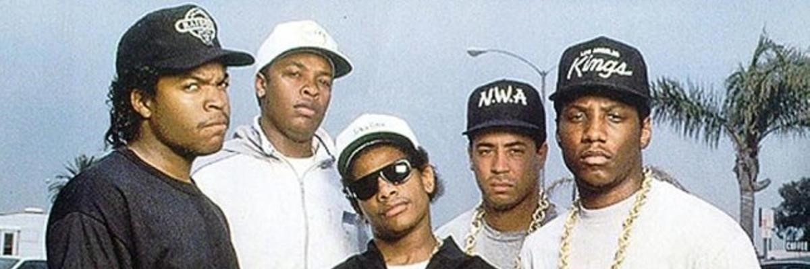
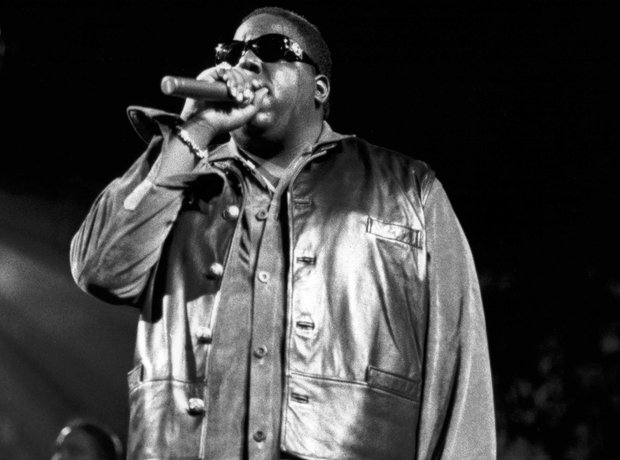

¡Bienvenidos al corazón del Hip-Hop! En esta página encontrarás todo lo que necesitas saber sobre este movimiento cultural que nació en las calles y se convirtió en un fenómeno global. El Hip-Hop no es solo música, es una forma de vida, un arte, y una voz para las comunidades que transformaron el mundo con creatividad, resistencia y estilo. Aquí exploraremos sus raíces, su evolución y cómo continúa marcando tendencias en la música, el arte y la sociedad.

El arte de rimar y expresar pensamientos, emociones o historias a través de la lírica. Es la voz del movimiento y uno de sus elementos más reconocibles.
La habilidad de manipular discos y mezclas musicales, creando ritmos únicos que dieron vida a las primeras fiestas de Hip-Hop.
Un estilo de baile lleno de acrobacias, fuerza y creatividad. Los breakers expresan con sus movimientos la esencia del ritmo y la libertad.
El arte visual que lleva las ideas del Hip-Hop a las paredes de la ciudad, representando el grito de protesta, identidad y creatividad de las comunidades urbanas.
El MCing, también conocido como rapear, es uno de los cuatro pilares fundamentales del Hip-Hop. "MC" proviene de la abreviatura de **Master of Ceremonies**, y su función principal en los inicios era animar al público en las fiestas, presentando al DJ y motivando a los asistentes con frases simples y rítmicas. Con el tiempo, este rol evolucionó hacia un arte más profundo de rimar y narrar historias a través de la música. El MCing surgió en las calles del Bronx, Nueva York, durante los años 70, como una forma de expresión para las comunidades marginadas. Inspirado en tradiciones orales africanas y en el estilo de los "toasters" jamaicanos (poetas que hablaban rítmicamente sobre música reggae o dub), el MCing permitió a los jóvenes contar sus vivencias, denunciar injusticias y compartir sueños y aspiraciones.
